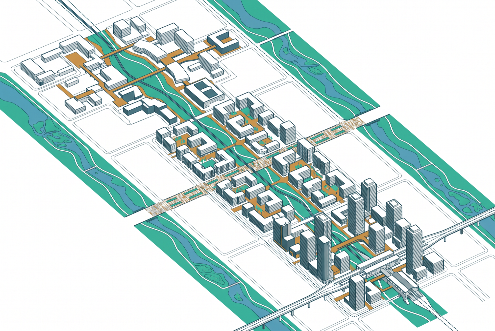
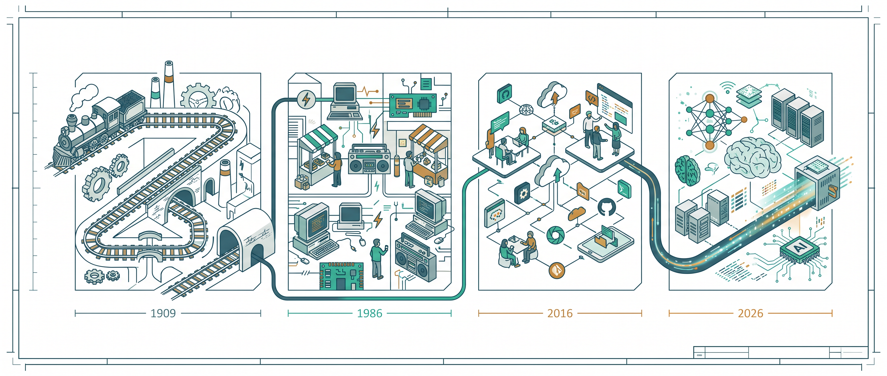
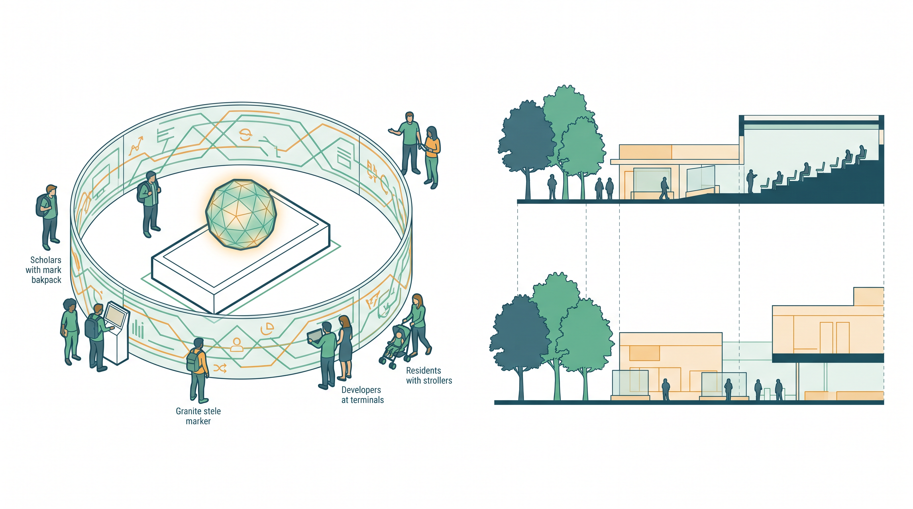
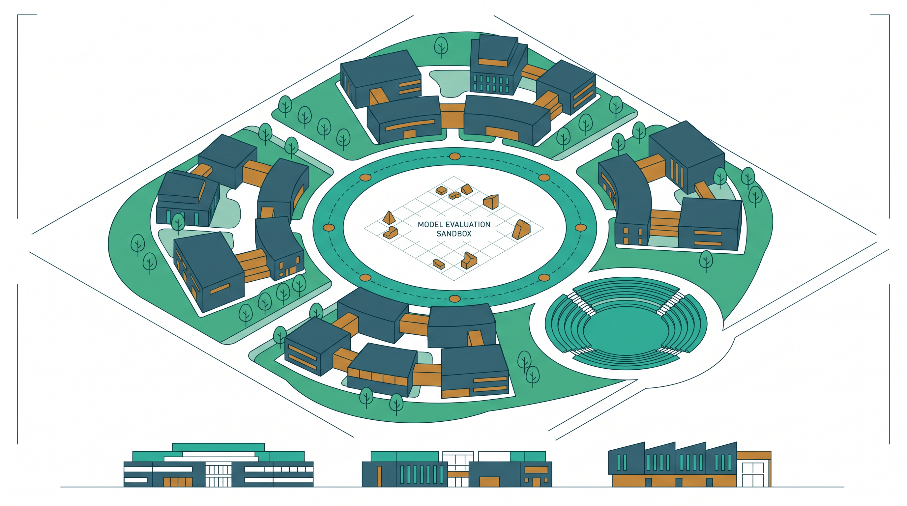
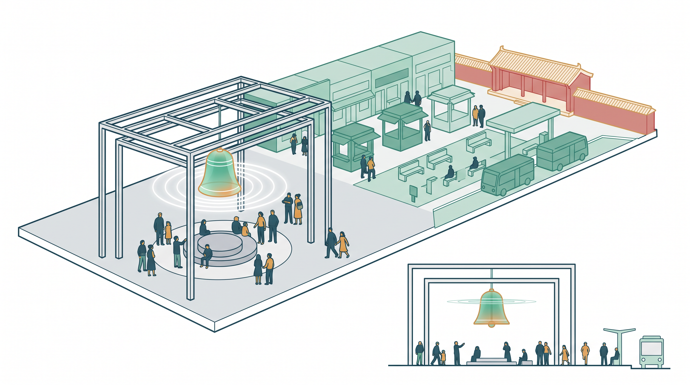
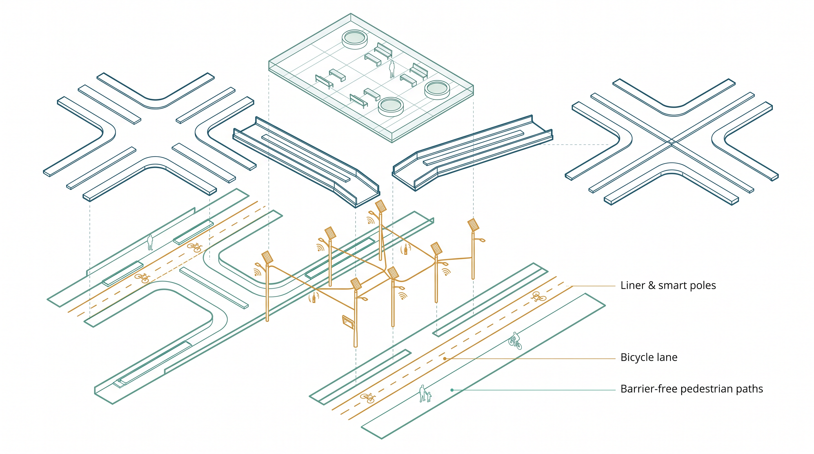
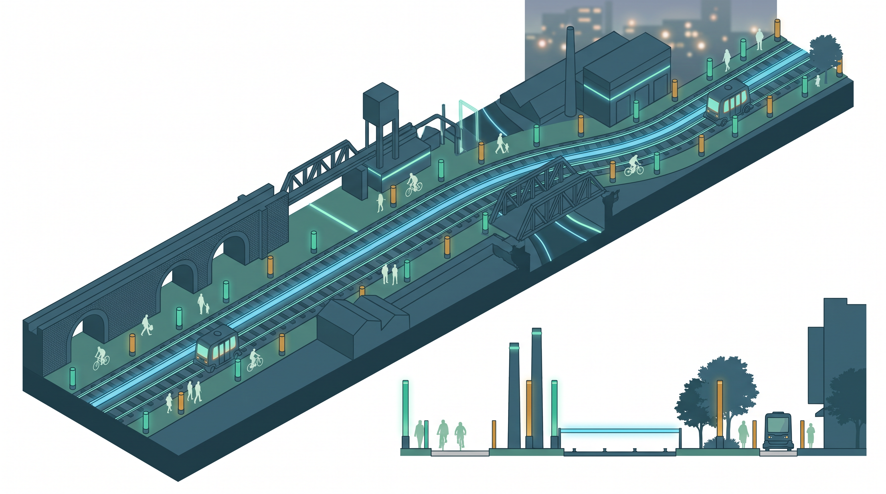

A Century on the Smart Rail — Urban Design for the Centennial Jing-Zhang AI Innovation Belt
v0.2: 'One Track, A Century Relay'. Built on the verified official fact that Jing-Zhang Heritage Park Phase 2 fully opened on 2026-08-06, the proposal rewrites north-south connectivity from a design goal into a given premise, and focuses on this proposal's exclusive contribution — the functional-connection layer: three stations (Origin / Acceleration / Bell) plus a six-crossing interface system. All 12 scenario cards carry a geolocated mount point (GeoJSON-referenced), an operator, an exit condition and a maturity grade. Metrics adopt the four-tier caliber (official / design target / provisional recomputed / unknown). The Origin Stele is upgraded into an Open-Source Stele whose data ring hosts machine-readable proposal data. Land-use codes synced to the 2026-08-16 official enum correction (09-series commercial).
A Century on the Smart Rail — Urban Design for the Centennial Jing-Zhang AI Innovation Belt
> **Status statement**: This proposal is AI-generated. Every spatial idea is a **conceptual suggestion, reference scheme, or material for professional teams to deepen** — not statutory planning, approval basis, engineering conclusion, investment commitment, or final retain-renovate-demolish judgment. Official precise redlines and planning controls are missing; the proposal uses the repository-registered provisional boundary and will be recalculated when official data arrives. All AI-generated concept images in assets/media/ are **design-intent illustrations, not site evidence**; toolchain disclosure in Chapter 12.

Design Basis and Source List
The primary basis is the prequalification announcement issued by the Haidian Branch of the Beijing Municipal Commission of Planning and Natural Resources [source:OFFICIAL-ANNOUNCEMENT] and the agent taskbook [source:AGENT-TASKBOOK]. Machine-readable inputs come from the repository site package [source:SITE-PACKAGE]: design_brief, agent_taskbook (six mandatory tasks, ten charters, unified boundary clause, multimodal presentation contract), allowed_design_space, planning_limits, enums, schemas and visual_style_recommendations.
**New factual basis in v0.2 (cross-verified official public reports)**: Jing-Zhang Railway Heritage Park Phase 2 fully opened on 2026-08-06 — a 9 km green corridor (Xizhimen to the North 5th Ring), ~53 ha, serving ~70 communities and ~450,000 residents, with all enclosure fences removed, 9 urban branch roads opened through the line, 46 entrances, and an uninterrupted "three-path one-green" slow-traffic system [source:PARK-PHASE2-OPEN]. Furthermore, the regulatory plan for the blocks along the park was approved on 2026-08-12 [source:PARK-CONTROL-PLAN]. **These two official advances form v0.2's premise: north-south connectivity and the linear public-space skeleton are already delivered by the government; this proposal therefore does not redesign "connectivity" — it designs the functional-connection layer on top.** A related preview report (2026-07-30, pre-opening) is retained separately as a process record [source:PARK-PHASE2-PREVIEW] to avoid caliber mixing.
Source boundaries follow the public source registry [source:SOURCE-REGISTRY] and the processed fact pack [source:PROCESSED-FACT-PACK]. The submitted site boundary derives from the maintainer-defined provisional file [source:BOUNDARY-SOURCE]; the three key areas share its source [source:KEY-AREA-SOURCE], all labeled geometry_role=provisional_constraint, official_boundary=false.
Professional standards: the announcement requirements [standard:PROJECT-OFFICIAL-ANNOUNCEMENT], agent taskbook [standard:PROJECT-AGENT-OPEN-CALL-TASKBOOK], urban design measures [standard:MOHURD-URBAN-DESIGN-MEASURES], regulatory detailed planning depth [standard:MOHURD-CONTROL-DETAILED-PLANNING], land-use classification guide [standard:MNR-LAND-USE-CLASSIFICATION-GUIDE], architectural documentation depth [standard:MOHURD-ARCH-DESIGN-DEPTH-2016]. v0.2 adds three newly registered standards as scenario-design references: the Interim Measures for Generative AI Services [standard:GENERATIVE-AI-INTERIM-MEASURES] (compliance boundary for content-generating scenarios), the Barrier-Free Environment Law [standard:BARRIER-FREE-ENVIRONMENT-LAW] (human-service boundary at crossings and public-service venues), and the National Plan on Elderly Smart-Technology Difficulties [standard:ELDERLY-SMART-TECH-PLAN-2020-45] (parallel traditional-service principle for the health station). Land-use codes are synced to the 2026-08-16 official enum correction: commercial/service land now uses the 09 series (0901 commercial, 0902 business-finance); the former code 05 is now wetland, so all v0.1 code-05 parcels migrate to the 09 series. Evidence anchors: [data:geometry/site_boundary.geojson#SITE-001], [data:geometry/constraints.geojson#CON-HER-001], [metric:site_area_sqm].
Three-Level Scope Framework
The announcement establishes three scope levels [source:OFFICIAL-ANNOUNCEMENT]; the proposal configures research — design — detailed design depth accordingly.
**Coordinated research area (~43.6 km²)**: research only, no spatial conclusions; announced area fact with provisional recomputation [metric:research_area_sqm].
**Overall design area (~11.4 km²)**: regulatory-plan-depth urban design framework; recomputed boundary area [metric:site_area_sqm], file [data:geometry/site_boundary.geojson#SITE-001] labeled boundary_precision=provisional_rough.
**Key detailed design area (~368.4 ha)**: Zhongzhiyuan AI Acceleration Area (announced 192.1 ha), Beijing AI Origin Community (104.3 ha), Dazhongsi AI Industry Cluster (72.0 ha); conceptual detailed design in [data:geometry/key_areas.geojson#PROV-KEY-001], recomputed areas [metric:key_area_total_sqm] and [metric:key_area_count].
**v0.2 framework correction**: with Phase 2 open, the spatial skeleton of the overall design area (9 km spine, 46 entrances, 9 branch roads) is a given condition [source:PARK-CONTROL-PLAN]. The three levels divide as — research: what new functional connections the AI era needs; overall design: where those connections land and how they are interfaced (this proposal's core increment); key areas: how each station deepens internally. Per [depth:three_level_scope_framework]; all layers and area metrics will be recalculated when official geometry arrives.
Coordinated Research Area: Industry and Future City Research
**Overall concept: One Track, A Century Relay.** In 1909 the Jing-Zhang Railway opened; in August 2026 the same corridor reopened as a 9 km park spine. The proposal proposes a four-level naming system: belt (Jing-Zhang Smart Rail) — stations (Origin / Acceleration / Bell) — corridor (Smart Rail Corridor) — nodes (Open-Source Stele / Bell of Intelligence / six crossings). All names are original; the logo motif is a zigzag line (switchback abstraction + letter Z + data pulse) in Jing-Zhang teal with Smart-Rail glow and mileage-amber accents. **Prior-use self-check**: public search shows "smart rail" exists as a technical term in rail transit equipment; the combination "京张智轨 / Jing-Zhang Smart Rail" as a belt brand is not the same commercial mark; the proposal registers no trademark and the name requires professional clearance before any formal use (Chapter 12). This responds to agent.1 [standard:PROJECT-AGENT-OPEN-CALL-TASKBOOK].
**Four-era timeline narrative (1909—1986—2016—2026)**: the cultural narrative is not railway decoration but a relay of four generations of independent innovation on one corridor — 1909 self-built railway (engineering), 1986 Zhongguancun electronics street (market), 2016 China's open-source force (collaboration), 2026 full-stack AI belt (intelligence). Spatial carriers in Chapter 9. All four years are public history, without dramatization.

**Global case benchmarks (7 cases, each with "what not to copy")**: San Francisco SoMa/Mission Bay (anchor institutions + mixed blocks; not copyable: abundant incremental land) [source:CASE-SF-SOMA], London King's Cross (hub gateway + university; not copyable: single-owner development) [source:CASE-LONDON-KINGS-CROSS], Paris Station F (super-incubator in existing fabric; not copyable: era of low rents) [source:CASE-PARIS-STATION-F], Singapore one-north (phased integration; not copyable: strong state land control) [source:CASE-SG-ONE-NORTH], Seoul DDP (landmark-led; not copyable: single-landmark event density) [source:CASE-SEOUL-DDP], Shenzhen Bay (public-space quality; not copyable: share of new land) [source:CASE-SZ-BAY], Zhongguancun's own evolution (lesson: functional upgrading lagged business turnover) [source:CASE-ZGC-SELF-EVOLUTION]. Mechanism-level extraction only, responding to agent.2 per [depth:overall_spatial_structure].
**Future-city assessment**: AI new-quality productive forces change the "interface" of space, not the "essence" of cities. Three principles: renewal-first, scenario-as-infrastructure, public space as the means of innovation production.
Overall Design Area: Urban Renewal and Regulatory-Plan-Level Urban Design
Organized as a regulatory-plan-depth framework [standard:MOHURD-CONTROL-DETAILED-PLANNING] [standard:MOHURD-URBAN-DESIGN-MEASURES]; outputs are conceptual zoning and structure.
**Overall structure v0.2: one belt, three stations, six crossings, two wings.** On top of v0.1's "one belt three stations two wings", v0.2 introduces the **six-crossing interface system** — borrowing the railway level-crossing motif, six pedestrian/cycle-friendly, scenario-mountable interface nodes (GW-IF-01~06, geometry in [data:geometry/public_space.geojson#GW-IF-01]) are placed where the 9 km spine meets east-west functional breaks. The officially opened 9 branch roads solved **traffic connectivity** [source:PARK-PHASE2-OPEN]; the six crossings solve **functional connection** — each is a "stitching kit" (barrier-free ramp + cycle waiting area + scenario mount post + honor display slot), aligned with the 9 existing branch roads rather than duplicating them. Structure logic per [depth:overall_spatial_structure]; zoning in [data:geometry/land_use.geojson#LU-001].
**Land-use layout (conceptual, 09-series enum)**: research land 0802 in the Zhongzhiyuan and Origin cores [metric:land_use_0802_sqm]; commercial 0901 along the Dazhongsi hub and gateways [metric:land_use_0901_sqm]; business-finance 0902 at the Acceleration Station east wing and gateway frontages [metric:land_use_0902_sqm]; urban residential 0701 preserving community fabric [metric:land_use_0701_sqm]; roads 1207 [metric:land_use_1207_sqm] [metric:road_area_sqm] [metric:road_ratio]; park green 1401 [metric:green_space_area_sqm] [metric:green_ratio]; plazas 1403 [metric:public_space_area_sqm] [metric:public_space_ratio]; reserved 16 held strategically. Conceptual footprints [metric:building_footprint_area_sqm] [metric:building_density], layer [data:geometry/buildings.geojson#BLDG-Z01].
**Intensity and retain-renovate-demolish**: official FAR/height/density/setbacks missing in planning_limits.json, marked "pending official confirmation" [depth:development_intensity_controls] [depth:height_massing_character]; TOD gradients with heritage-sensitive reduction, no numeric commitments. Renewal-first with point insertions [depth:retain_renovate_demolish], no parcel-level demolition conclusions. Notably, the regulatory plan along the park is approved [source:PARK-CONTROL-PLAN]; wherever this conceptual proposal conflicts with its control conditions, the official plan prevails — recorded in assumptions.json.
Detailed Design of Key Areas
Each key area forms a complete mini-scheme [depth:three_key_area_detailed_design]; geometry [data:geometry/key_areas.geojson#PROV-KEY-002], public space [data:geometry/public_space.geojson#PUBLIC-P01].
**① Beijing AI Origin Community (Origin Station, announced 104.3 ha)**: the "first scene" of a world-class AI ecosystem. Spatial formula "one stele, one loop, one strip" — Open-Source Stele plaza (mounted at [data:geometry/public_space.geojson#SCN-S02]), developer loop, open-campus interface strip. Mixed scholar-developer blocks via existing-interface activation; departure-ritual space. Scenarios: S01, S02, S03. Risks: campus boundary policies, property complexity.

**② Zhongzhiyuan AI Independent Innovation Acceleration Area (Acceleration Station, announced 192.1 ha)**: the full-stack "locomotive depot" and AI-governance voice. Spatial formula "one core, one ring, two clusters" — evaluation & governance core ([data:geometry/public_space.geojson#SCN-S07]), acceleration green ring, west R&D cluster, east compute-and-data cluster. Scenarios: S04, S05, S06. Risks: siting and energy constraints of new infrastructure.

**③ Dazhongsi AI Industry Cluster (Bell Station, announced 72.0 ha)**: the "arrival experience field" of smart-native formats. Spatial formula "one bell, one street, one plaza" — Bell of Intelligence (adjacent [data:geometry/public_space.geojson#SCN-S08]), smart-native commercial street (0901), gateway plaza. Dialogue with Juesheng Temple's ancient bell under strict heritage avoidance [data:geometry/constraints.geojson#CON-HER-001]; TOD-organized buildings (intensity pending). Scenarios: S08, S09, S10. Risks: heritage control-zone review; hub crowd management.

AI Innovation Ecosystem, Personas, and AI+ Scenarios
Responding to agent.3: 12 scenario cards + 5 personas + scenario protocol + refusal list.
**Scenario go-live iron rule (v0.2 core)**: every card must bind ① a spatial mount point (GeoJSON-referenced SCN id below) ② an operator (suggested) ③ an exit condition. **Any missing item means the scenario does not go live.** Maturity is graded as "pilot-ready / needs specialized review".
| # | Scenario | Mount point | Operator (suggested) | Exit condition | Maturity | |---|---|---|---|---|---| | S01 | AI tutoring block | [data:geometry/public_space.geojson#SCN-S01] | Community education center + schools | Stop on any minor-data complaint; 100% parental consent required | Needs review | | S02 | Open-source market | [data:geometry/public_space.geojson#SCN-S02] | Developer self-governance committee | Two consecutive editions under 50 participants → online | Pilot-ready | | S03 | Researcher collab station | [data:geometry/public_space.geojson#SCN-S03] | Joint university labs | Stop on data-domain violation | Pilot-ready | | S04 | LLM evaluation sandbox | [data:geometry/public_space.geojson#SCN-S04] | Third-party evaluator | Stop on safety incident or unpublished results | Needs review | | S05 | Robotics proving ground | [data:geometry/public_space.geojson#SCN-S05] | Professional operator | Stop on injury; 90-day continue/stop review | Needs review | | S06 | AV shuttle test segment | [data:geometry/public_space.geojson#SCN-S06] | Local traffic authority + operator | Stop on any accident; permit expiry | Needs review | | S07 | Scenario dispatch center | [data:geometry/public_space.geojson#SCN-S07] | Belt-level platform operator | Rectify if audit trail incomplete | Pilot-ready | | S08 | Smart-native district | [data:geometry/public_space.geojson#SCN-S08] | Retail operator alliance | Stop on consumer-data violation | Pilot-ready | | S09 | Urban vital signs | [data:geometry/public_space.geojson#SCN-S09] | City operations dept | Stop if aggregate-only principle broken | Pilot-ready | | S10 | Jing-Zhang cultural AI guide | [data:geometry/public_space.geojson#SCN-S10] | Cultural operator | Offline fix on verified factual error | Pilot-ready | | S11 | Waterfront test strip | [data:geometry/public_space.geojson#SCN-S11] | Water authority + street office | Stop on blue-line ecological disturbance | Needs review | | S12 | Community AI health station | [data:geometry/public_space.geojson#SCN-S12] | Community health center | Stop without licensed-professional review | Needs review |
**Scenario protocol in one sentence**: explained before start (service, data use, exit) — visible during run (signage, human-review entry) — removable after end (detachable devices, deletable data). **Refusal list**: face recognition, behavioral profiling, cross-scenario personal-data linkage, real-time location tracking — none of these enter public-space scenarios; public safety does after-action review only, never live monitoring. **Meta-scenario (S13 appeal desk)**: any operational conflict can be appealed, results published, pilots suspendable — mounted at SCN-S07. Content-generating scenarios (S10, S08) stay within [standard:GENERATIVE-AI-INTERIM-MEASURES]; S12 follows parallel traditional-service principles [standard:ELDERLY-SMART-TECH-PLAN-2020-45]; crossings and public-service venues respect the human-service boundary of [standard:BARRIER-FREE-ENVIRONMENT-LAW].
**Personas (5, each with a hard boundary)**: researchers (boundary: research-data autonomy); developers/entrepreneurs (boundary: exit deletes data); industry engineers (boundary: tests never occupy public circulation); residents (boundary: rest rights precede event rights); international visitors (boundary: cross-border data compliance).
Land Use, Building Scale, and Retain-Renovate-Demolish Strategy
All areas recomputed from GeoJSON under EPSG:4548, consistent with metrics.json [depth:land_use_layout] [depth:metrics_recalculation].
**Four-tier metric caliber (v0.2 transparency framework)**: **official values** (scope areas; park Phase 2: 9 km, ~53 ha [source:PARK-PHASE2-OPEN]) / **design targets** (conceptual zoning goals, non-statutory) / **provisional recomputed values** (from submitted geometry; recalculated when official geometry arrives) / **unknown** (FAR, height, density, green ratio, setbacks — unpublished; fabrication refused).
| Metric | Value | Caliber | |---|---|---| | Site area [metric:site_area_sqm] | 11,412,842 m² | provisional recomputed (announced ~11.4 km²) | | R&D 0802 [metric:land_use_0802_sqm] | ~116.1 ha | provisional recomputed · conceptual | | Commercial 0901 [metric:land_use_0901_sqm] | ~217.6 ha | provisional recomputed · migrated from v0.1 code 05 | | Business-finance 0902 [metric:land_use_0902_sqm] | ~31.9 ha | provisional recomputed · conceptual | | Residential 0701 [metric:land_use_0701_sqm] | ~113.3 ha | provisional recomputed · conceptual | | Roads [metric:road_area_sqm] / [metric:road_ratio] | ~101.7 ha / 8.91% | provisional recomputed · conceptual network (not redlines) | | Park green [metric:green_space_area_sqm] / [metric:green_ratio] | ~213.9 ha / 18.74% | provisional recomputed · conceptual | | Public space [metric:public_space_area_sqm] / [metric:public_space_ratio] | ~21.9 ha / 1.92% | provisional recomputed (excl. SCENARIO_NODE points) | | Footprints [metric:building_footprint_area_sqm] / [metric:building_density] | ~12.2 ha / 1.06% | conceptual, not statutory density |
**Caliber clarifications**: ① 53 km² research order-of-magnitude ≠ 53 ha park Phase 2 ≠ 11.4 km² overall design area; ② the 1207 conceptual road network aligns with the officially opened 9 branch roads — not the same redlines; ③ the green ratio is a conceptual zoning value, not the statutory ratio; the approved regulatory plan prevails [source:PARK-CONTROL-PLAN]. Partition [data:geometry/land_use.geojson#LU-001] is full-coverage, overlap-free. Per [depth:retain_renovate_demolish]: retain communities and heritage, renovate interfaces, no demolition conclusions, point insertions only.
Transport, Rail, Municipal Infrastructure, and Public Services
**Transport and rail**: existing rail stations anchor arrivals; conceptual three-vertical-six-horizontal network [data:geometry/roads.geojson#ROAD-V01]; Smart Rail experience line (slow traffic + low-speed shuttle test segment under sandbox rules) [data:geometry/roads.geojson#ROAD-GW01]. **Six-crossing interface system (v0.2 core)**: GW-IF-01 South Gateway seam, 02 Community seam, 03 Academy seam, 04 Origin seam, 05 Green-Ring seam, 06 North-Ring seam [data:geometry/public_space.geojson#GW-IF-01]; each carries four standard components — barrier-free ramp (per [standard:BARRIER-FREE-ENVIRONMENT-LAW] human-service boundary), cycle waiting area, scenario mount post, honor display slot; crossings add no vehicle lanes, stitching slow traffic and functions only [depth:traffic_rail_slow_parking].

**Municipal and new infrastructure**: directional only — green-compute energy/cooling, sensing power/comms, co-mounted smart poles [depth:municipal_new_infrastructure]; no utility-routing conclusions.
**Public services**: community-service land 0702 follows existing communities [data:geometry/land_use.geojson#LU-001]; the AI health station (S12) embeds with licensed review and parallel traditional service [standard:ELDERLY-SMART-TECH-PLAN-2020-45]; education land 0804 serves campus linkage.
Blue-Green Network, Public Space, and Urban Character
**Blue-green network**: "one belt, one ring, many points" [metric:green_space_area_sqm] [metric:green_ratio] [data:geometry/green_space.geojson#GREEN-001]; Xiaoyuehe blue line as provisional indication [data:geometry/constraints.geojson#CON-WAT-001], avoided by default [depth:blue_green_public_space].
**Public space system**: gateway plaza, Open-Source Stele plaza, Bell plaza, governance plaza and six crossings [metric:public_space_area_sqm] [metric:public_space_ratio] [data:geometry/public_space.geojson#PUBLIC-P01].
**AI pilgrimage landmarks (3+1, upgraded in v0.2)**: ① **Open-Source Stele** (upgraded from Origin Stele) — geodetic-origin imagery + updatable milestone chronology; the stele integrates an open data ring: each cohort's accepted proposals' structured data (GeoJSON/metrics) can be inscribed with the authors' explicit authorization, readable by visitors via QR — the stele is not only a memorial but the public API gate of the belt's open DNA; inscription is opt-in and exitable. ② **Bell of Intelligence** — AI co-created sound installation, honorary bell-ringer system. ③ **Smart Rail Corridor** — rails as light bands + mileage honor columns. Optional ④ Tianyou New-Track node. All respect agent.4 boundaries: no heritage/blue-line violation, no engineering conclusions, no over-entertainment.

**Urban character**: "industrial memory × academic temperament × intelligent glow"; wayfinding translates railway components with belt-wide Smart-Rail mileage notation (agent.5).
Renewal Projects, Implementation Policy, and Phasing
**Renewal project list (conceptual, each with an evidence gate)**:
| Project | Content | Evidence gate to the next step | |---|---|---| | P1 Open-Source Stele plaza | Origin Community first demonstration | Data-inscription authorization mechanism in place | | P2 Smart Rail demo segment | Slow traffic + guide (S06/S10 mounts) | AV sandbox permit | | P3 Open-source market venue | Permanent home for S02 | First edition ≥50 participants | | P4 Sandbox + dispatch center | S04/S07 | Evaluator qualification & safety assessment | | P5 Bell of Intelligence + gateway plaza | Bell Station landmark | Heritage-authority siting review | | P6 Smart-native district interface | S08 | Data-compliance review passed | | P7 Waterfront test strip | S11 | Official blue-line confirmation |
**MVP pilot cards (v0.2 new; RACI for three first projects)**:
| Project | R | A | C | I | Concept KPI | Exit | |---|---|---|---|---|---|---| | Open-source market #1 | Community committee | Street office | University clubs | Belt platform | ≥50 participants, ≥40% return rate | Two misses → online | | Smart Rail guide pilot | Cultural operator | Belt platform | Historians | Local street | Zero factual errors, ≥5,000 MAU | Offline fix on error | | Sandbox buildout | Third-party evaluator | Belt platform | Safety assessor | Regulators | Evaluation protocol published | Stop on safety incident |
Phasing per [depth:phasing_implementation]: Phase 1 2026-27 [metric:phase_1_area_sqm] [data:geometry/phasing.geojson#PHASE-01]; Phase 2 2028-29 [metric:phase_2_area_sqm] [data:geometry/phasing.geojson#PHASE-02]; Phase 3 2030-33 [metric:phase_3_area_sqm] [data:geometry/phasing.geojson#PHASE-03].
**Policy instruments and events (directional)**: scenario list system, scenario vouchers, developer points and badges, dual-track governance; calendar — spring Departure Day, summer Open-Source Week, autumn Global AI Governance Forum, winter Bell Festival, monthly Interface Day (rotating crossings). Conversion path: market → incubation → scenario testing → deployment. All conceptual (agent.6).
**Regional synergy two-way matrix (v0.2 new)**: with Beiwei Community (data return; regional context [source:PUBLIC-REGIONAL-CONTEXT]), Future Science City (compute complementarity), Huairou Science City (big-science linkage), Beijing E-Town (smart-manufacturing conversion), and Jing-Jin-Ji (talent circulation) — each an "open / import / boundary" interface table in visual/index.html; no evidence-free commitments.
Metrics, Area Recalculation, and Compliance Matrix
All metrics recomputed under EPSG:4548 [depth:metrics_recalculation]: [metric:site_area_sqm], [metric:research_area_sqm], [metric:key_area_total_sqm], [metric:key_area_count], and ratios [metric:green_ratio] [metric:public_space_ratio] [metric:road_ratio] [metric:building_density] are known and re-verifiable. Unknown metrics (FAR, height, density, official green ratio, setbacks) carry reason + required_for_formal_submission; fabrication refused. The three formal core visual metrics (site_area_sqm / green_ratio / public_space_ratio) match the data-value declarations in visual/index.html, satisfying the taskbook's visual metrics contract.
**Compliance matrix**: compliance_matrix.json covers announcement 1.3.1-1.3.3, 1.4.1-1.4.3, 1.5 and agent.1-agent.6 with section/layer/metric/drawing/visual/source/assumption/self-check links [depth:risk_missing_data]; standard_matrix covers the six mandatory standards plus three new reference standards; design_depth_matrix marks all 15 items complete.
Risk, Copyright, and Compliance
**Data risk**: provisional boundaries are rough; unusable for redlines/ownership/precise-area claims; full recalculation when official geometry arrives [data:geometry/constraints.geojson#CON-HER-001]. **Regulatory-plan precedence**: the park-corridor control plan is approved [source:PARK-CONTROL-PLAN]; where this concept conflicts, the official plan prevails.
**AI-generated content disclosure (v0.2, multimodal guardrails)**: the 7 concept images in assets/media/ were generated with an image model (Gemini image model via ListenHub API); they are design-intent illustrations, **not site evidence or condition records**; no real portraits or copyrighted material appear in them; prompts and toolchain are recorded in report/narrative.md; all images carry alt text. All factual claims come from public sources, strictly separated from generated imagery.
**Brand and prior rights**: public search shows "smart rail" exists as a rail-transit technical term; the combination "京张智轨 / Jing-Zhang Smart Rail" is not used commercially and requires professional trademark clearance before formal use. The Open-Source Stele inscription mechanism is authorization-based and exitable; no personal data collected.
**Compliance baseline**: no claims of official approval; no investment/investment-promotion/policy commitments; data minimization and human review in all scenarios; immature technologies appear only in test/validation scenarios marked as sandboxed [standard:GENERATIVE-AI-INTERIM-MEASURES].
**Generation disclosure**: produced by an AI agent following the repository skill urban-design-ai-submission workflow (v0.2: absorbing community feedback, syncing the official enum correction and the taskbook's multimodal contract).
References
- [source:OFFICIAL-ANNOUNCEMENT] Prequalification announcement (2026-05-09)
- [source:AGENT-TASKBOOK] brief/site-package/agent_taskbook.json (incl. Aug-2026 multimodal contract)
- [source:PARK-PHASE2-OPEN] Heritage Park Phase 2 opened 2026-08-06 (Beijing Daily / CNR / Sina cross-verified: 9 km, ~53 ha, ~70 communities / 450k residents, fences removed, 9 branch roads, 46 entrances)
- [source:PARK-CONTROL-PLAN] Park-corridor regulatory plan approved (beijing.gov.cn 2026-08-12)
- [source:PARK-PHASE2-PREVIEW] Phase 2 preview report (beijing.gov.cn 2026-07-30, pre-opening — process record)
- [source:SITE-PACKAGE] brief/site-package/ (incl. 2026-08-16 official enum correction)
- [source:SOURCE-REGISTRY] data/source_registry.json
- [source:PROCESSED-FACT-PACK] data/processed/agent_fact_pack.md
- [source:CASE-SF-SOMA] [source:CASE-LONDON-KINGS-CROSS] [source:CASE-PARIS-STATION-F] [source:CASE-SG-ONE-NORTH] [source:CASE-SEOUL-DDP] [source:CASE-SZ-BAY] [source:CASE-ZGC-SELF-EVOLUTION] [source:PUBLIC-REGIONAL-CONTEXT] 全球案例与区域背景（sources.json 登记条目）
- [source:BOUNDARY-SOURCE] brief/site-package/geometry/provisional_boundaries.geojson (PROV-SITE-001)
- [source:KEY-AREA-SOURCE] brief/site-package/geometry/provisional_boundaries.geojson (PROV-KEY-001/002/003)
- [standard:PROJECT-OFFICIAL-ANNOUNCEMENT] [standard:PROJECT-AGENT-OPEN-CALL-TASKBOOK] [standard:MOHURD-URBAN-DESIGN-MEASURES] [standard:MOHURD-CONTROL-DETAILED-PLANNING] [standard:MNR-LAND-USE-CLASSIFICATION-GUIDE] [standard:MOHURD-ARCH-DESIGN-DEPTH-2016] brief/site-package/standards/references/
- [standard:GENERATIVE-AI-INTERIM-MEASURES] Interim Measures for Generative AI Services — referenced only within Article 2 scope
- [standard:BARRIER-FREE-ENVIRONMENT-LAW] Barrier-Free Environment Law — referenced only within Article 39 listed services
- [standard:ELDERLY-SMART-TECH-PLAN-2020-45] State Council Doc 45 (2020) — reference for elderly-facing scenarios
- [depth:existing_conditions_diagnosis] [depth:three_level_scope_framework] [depth:overall_spatial_structure] [depth:land_use_layout] [depth:development_intensity_controls] [depth:height_massing_character] [depth:retain_renovate_demolish] [depth:traffic_rail_slow_parking] [depth:municipal_new_infrastructure] [depth:blue_green_public_space] [depth:three_key_area_detailed_design] [depth:renewal_project_list] [depth:phasing_implementation] [depth:metrics_recalculation] [depth:risk_missing_data]
- [data:geometry/site_boundary.geojson#SITE-001] [data:geometry/key_areas.geojson#PROV-KEY-003] [data:geometry/land_use.geojson#LU-R001] [data:geometry/buildings.geojson#BLDG-D01] [data:geometry/roads.geojson#ROAD-H04] [data:geometry/green_space.geojson#GREEN-002] [data:geometry/public_space.geojson#PUBLIC-P03] [data:geometry/constraints.geojson#CON-WAT-001] [data:geometry/phasing.geojson#PHASE-02] [data:geometry/public_space.geojson#SCN-S04] [data:geometry/public_space.geojson#GW-IF-04]
---
Figures
**Derived evidence figures (programmatically generated from the same GeoJSON/metrics)**


**AI-generated concept images (assets/media/, design-intent illustrations, not site evidence)**